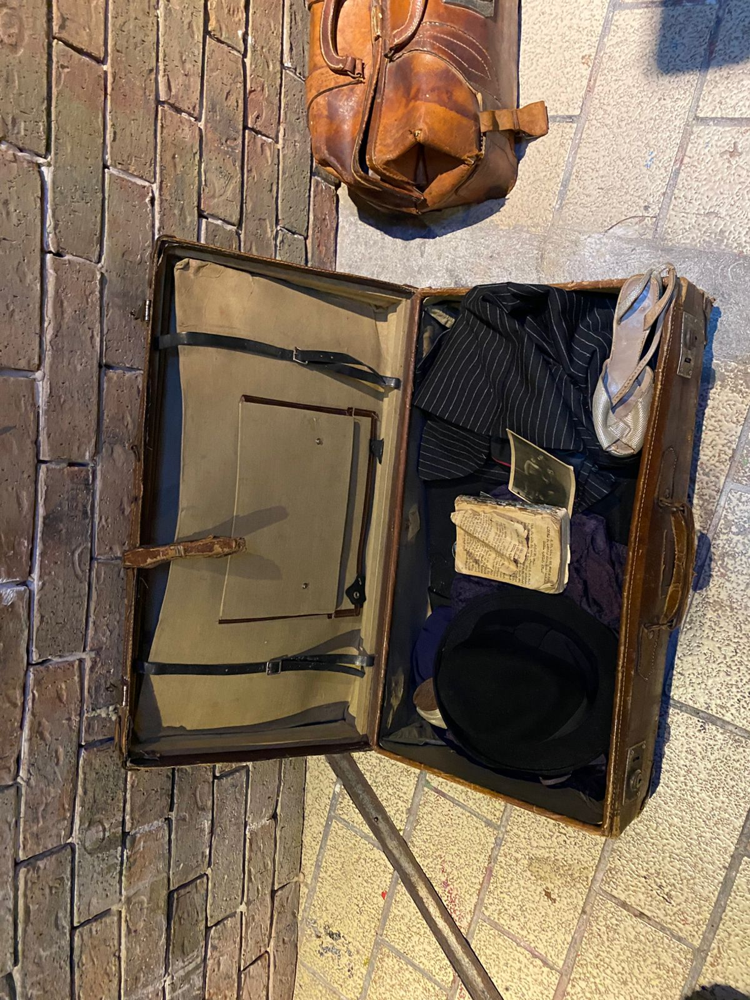

Memorias
de lo que fue
Un diario · 1943 – 1945
Las memorias
de mi padre
Hay noches en que la memoria de mi padre regresa con la claridad de una vela encendida en la oscuridad más profunda. No trae dolor consigo, sino algo más extraño: una calidez que duele.
Recuerdo sus manos grandes sobre mis hombros, la forma en que me decía mi nombre como si fuera una oración. Como si pronunciarlo fuera suficiente para mantenerme a salvo de todo lo que afuera se derrumbaba.
El mundo ardía, y él me leía. Me leía como si las palabras fueran un escudo. Como si la belleza de un verso pudiera detener lo que ningún muro detuvo.
fuimos llamados a esta tierra no para verla destruida,
sino para dejar en ella la huella de lo que amamos.
Cada nombre que recuerdes es una victoria sobre el olvido."
— Inspirado en Jaim Gurí, poeta de la resistencia
Me enseñó que la memoria no es un fardo, sino un deber sagrado. Que recordar el nombre de los caídos es la única forma de victoria que el tiempo no puede arrebatarnos.
Estas páginas son ese recordatorio. Un hijo que escribe lo que su padre no pudo terminar de decir.
Escrito en invierno de 1943
Lo que no puedo
olvidar
Vi la maleta de Moishe el día que lo llevaron. Era de cuero marrón, desgastada en las esquinas, con una correa que él mismo había remendado dos veces. No pesaba mucho, me dijo. Sólo lo esencial.
Pero ¿qué es lo esencial cuando te arrancan de tu hogar? ¿Qué cabe en una maleta cuando lo que dejas atrás es todo lo que eres?
Dentro: una fotografía de su madre, una carta sin terminar y el libro de oraciones con las páginas onduladas por el llanto de tres generaciones.

La maleta, pienso ahora, es la metáfora más honesta de lo que somos. No lo que poseemos, sino lo que decidimos cargar.
Y aprender a soltar la rabia, el rencor, las versiones de nosotros mismos que ya no sirven es también una forma de sobrevivir.
Cuando la historia
se repite
Hubo un tiempo en que el mundo prometió que nunca más. Que la magnitud del horror sería suficiente advertencia. Que la humanidad, una vez enfrentada a sí misma, aprendería.
No aprendió.
No porque sea incapaz de hacerlo, sino porque la indiferencia es más cómoda que el compromiso. Porque mirar hacia otro lado requiere menos de nosotros.
En el Gueto de Varsovia, más de 400,000 personas fueron reducidas a un espacio donde la vida se volvió espera. El mundo sabía. Las noticias llegaban. Las cifras existían. Y aún así, la reacción no llegó.
Hoy no hay muros visibles que encierren a millones de personas, pero sí sistemas que las mantienen al margen. Se les llama desigualdad, exclusión estructural, pobreza multidimensional.
Hoy, más de 330 millones de niños crecen sin acceso a lo esencial, no poque el mundo no pueda sostenerlos, sino porque ha aprendido a mirar sin detenerse.
El instrumento cambia. La indiferencia permanece.
— Martin Niemöller
Antes el sufrimiento tenía fronteras físicas. Hoy tiene fronteras invisibles.
Y, sin embargo, hay algo que no ha cambiado. ¿Qué distancia hay entre quien escuchaba rumores en 1942 y elegía no creer, y quien hoy desliza el dedo frente a la imagen de un niño que no comerá esta noche?
La historia no vuelve igual. Pero insiste.
Y aunque el horror no siempre se presenta como violencia directa o exterminio sistemático, la indiferencia sigue cumpliendo un papel parecido: permitir que el sufrimiento continúe cuando podría ser detenido.
Persona
y trascendencia

Hijo mío,
Si estas páginas llegan a tus manos, no es porque el tiempo haya sido amable, sino porque la memoria encontró la forma de sobrevivir. No escribo desde la certeza, sino desde lo único que realmente permanece cuando todo se derrumba, el vínculo humano.
Esta tragedia revela algo incómodo pero esencial: la dignidad humana no desaparece en el sufrimiento, pero sí puede ser ignorada, negada o destruida por otros. Incluso en los momentos más oscuros del Holocausto, la humanidad no dejó de existir. Lo que se perdió fue la capacidad de reconocerla en el otro.
La libertad, hijo, no es la ausencia de obstáculos. Es la decisión de resistir. De no doblegarse. De mantener la dignidad incluso cuando todo invita a abandonarla.
Una persona puede colaborar con el mal no solo por odio, sino también por silencio, por obediencia o comodidad. Y también puede resistirlo incluso in poder cambiar todo, eligiendo no deshumanizar, no callar frente a la injusticia, no normalizar lo inaceptable. La libertad no siempre cambia el mundo, pero siempre decide de qué lado se está.

Frente al mal, la neutralidad es complicidad. Yo elegí hablar. Tú también puedes elegir.
En medio del sufrimiento, el sentido no siempre aparece como respuesta clara. A veces se encuentra en lo más simple: en la memoria, en el amor que se transmite, en la idea de que alguien después de nosotros recordará.La fe, si existe, no es la promesa de que todo saldrá bien, sino esa certeza silenciosa de que ninguna vida es irrelevante, incluso cuando el mundo parece olvidarlo.
Después de este viaje en el tiempo, entendí que la indiferencia no es neutralidad sino una decisión. Mirar es fácil. Lo difícil es comprender, y todavía más difícil es estirar la mano, incluso desde la sombra, para intentar cambiar el rumbo de algo que parece demasiado grande.
La trascendencia no está en evitar el dolor ni en explicarlo, sino en lo que hacemos cuando lo reconocemos. Si lo dejamos pasar o si intentamos moverlo. A veces basta un solo grano de arena para desviar el curso de un río.
Hijo, recuerda a los que perdieron. Esa historia también es tuya. Y portarla, sin que te aplaste, es la tarea más sagrada que conozco.
Con todo mi amor,
Tu padre